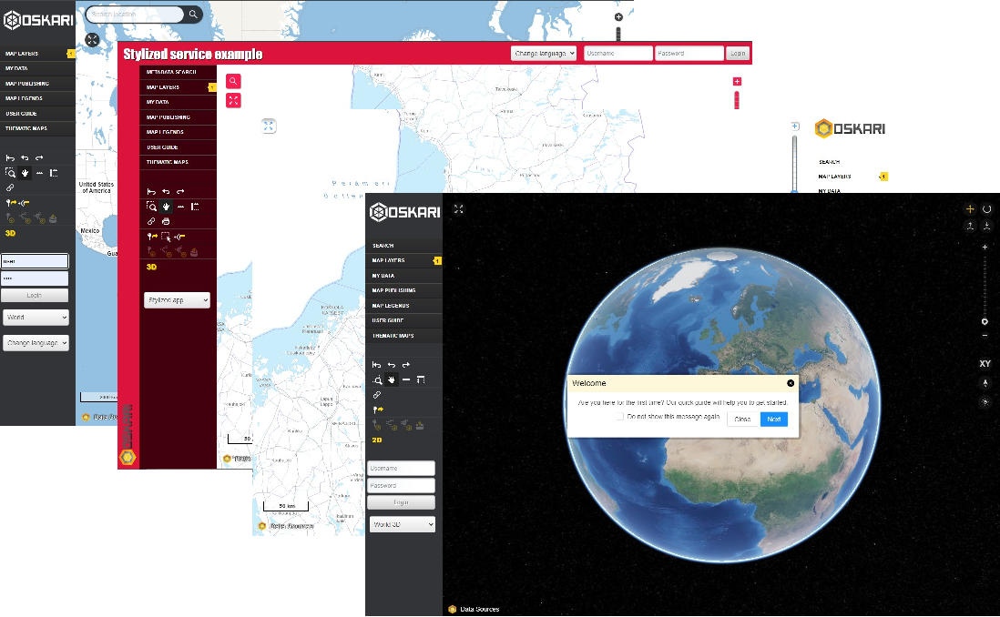
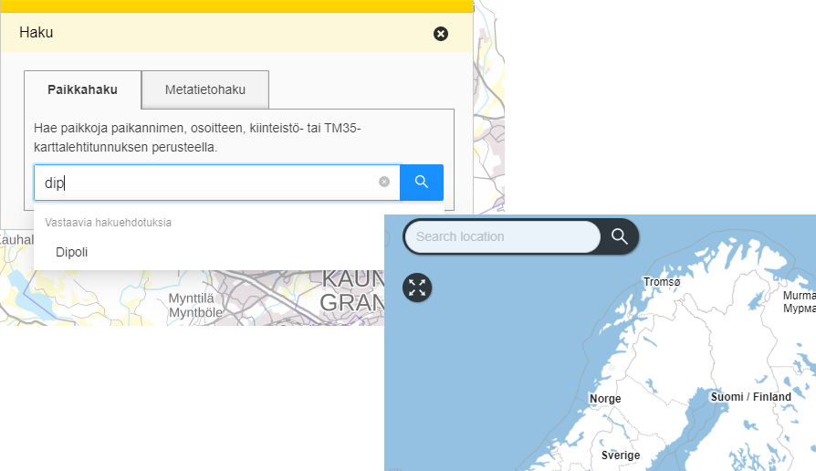
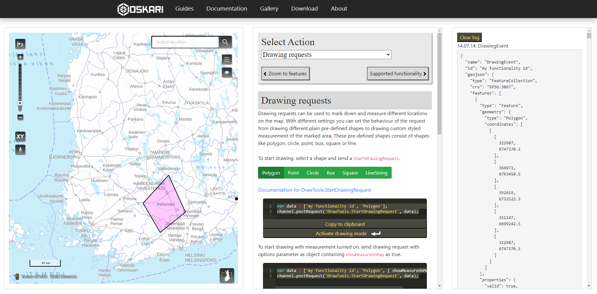

Tunnetko jo Oskarin?
Sami Mäkinen - Maanmittauslaitos
Lyhyt historia
- Syntynyt Paikkatietoikkunasta
- Avointa lähdekoodia
- ???
- Dollarit taskuun
### Oskari
- Palvelinpuoli: Java / Maven
- Käyttöliittymä: JS / Webpack
- Muut ainekset:
- PostgreSQL (PostGIS)
- Redis
- (Paikkatietoinfrastruktuuri)
Avointa lähdekoodia
GitHub.com/oskariorg
- oskari-server
- sample-server-extension
- oskari-frontend
- oskari-frontend-contrib
- sample-application
### Mitä Oskarilla voi tehdä?
- Karttapalvelu
- Syntynyt Paikkatietoikkunasta
- Tausta -> moni asia Oskarissa käy järkeen
- Paikkatietoinfrastruktuurin hyödyt
- Tukee EU:n INSPIRE-direktiiviä ja OGC-standardeja
- Aineistoja eri tiedontuottajien rajapinnoista
### MML:n erinäiset geoportaalit
- Paikkatietoikkuna
- Suomi.fi -kartat
- Arctic-SDI geoportal
- ELF / ELS
> Helpommin hyödynnettävä ja laajennettava
### Muita Oskari-palveluita
Tampere, HSY, Tilastokeskus, Lounaistieto, Museovirasto, Joensuu,
Traficom, Väylä, Islanti, Moldova, Indonesia jne
### Upotettavia karttoja
- Suomi.fi -palvelupisteet yms
- MML asiointipalvelu/karttapaikka
- MML tilannekuva
- Ruokaviraston kalastusrajoituspalvelu
- Suomen Väylät
- Kunnat
- Tapahtumajärjestäjät
https://demo.oskari.org

haku
Oma taustapalvelu / MML geokoodaus-rajapinta

### Räätälöinti
- Toiminnallisuuksien valinta
- Teematukea:
- käyttöliittymälle
- vektorikohteille
- Kielistysmuutokset
- Laajennettavuus
Upotettavan kartan ohjaaminen

### Tulossa
- Käyttäjän aineistojen yhdistäminen
- Java 8 -> 17
# Kiitos!
- Oskari-verkosto (JDF)
- https://oskari.org
- https://github.com/oskariorg
- Oskari-user@lists.osgeo.org
- https://gitter.im/oskariorg/chat